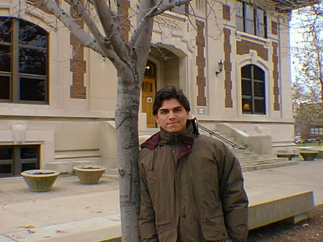

(click on the picture to see the full-size version)
Ah, this picture has been the source of many comments among my friends and colleagues, who make fun of me because I am so warmly dressed. So here is its story.
This picture was taken during my first semester at Purdue, in 1996. See, I come from Mexico City, where the lowest temperatures (3am-middle-of-the-winter temperatures) are -2 degrees celsius, around 30F. The last snowfall in Mexico City was somewhere around 100 years ago, and it was probably a few flakes that melted on contact to the ground. We are not used to low temperatures.
So there I am, a new grad student trying to survive through first-semester classes, qual exams, projects and the like, buried almost 24 hours a day in my cubicle, when someone (I believe it was Tanya) came around taking pictures, and insisted that we go outside to take my picture. There we went.
It wasn't really that cold. As you can see, there wasn't even snow on the ground. It was probably mid-November, so temperatures were probably somewhere between 20-30F. But for me, before having survived my first winter in Indiana, it was really, really cold. And accordingly, I'm wearing my bear-like heavy coat (which I still use today, although I wait until later in the winter to bring it out now).
And yet I'm smiling, or at least trying to. That's why I like this picture, and why I keep it around, even if it doesn't do very good advertising for Indiana weather-wise. It evokes a time that was very trying for me, but very exciting at the same time. And now that I am nearing the end of my stay at Purdue, looking at it brings back a lot of memories.
Here's a picture taken much more recently, a month or so ago. I was right in the middle of finishing a paper for submission to a journal. I'm not even trying to smile here. I was probably thinking of going to sleep and nothing more. How time changes people :-)
So there. That heavy-coat picture is probably going to be around for a while more.{kind=link}
{kind=link}